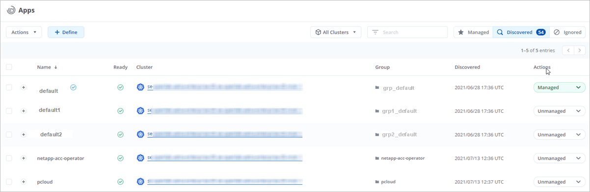
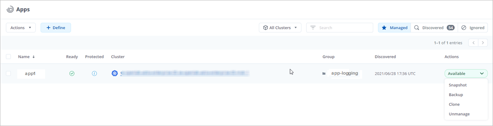
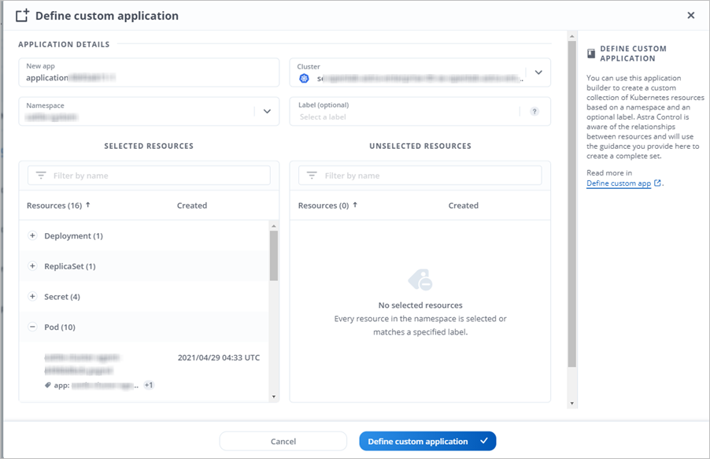
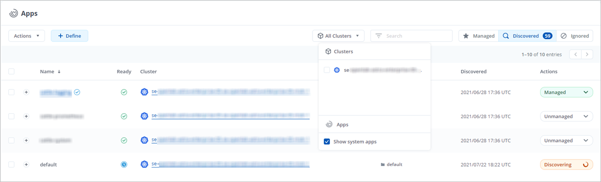

アプリの管理を開始します
寄稿者
お先にどうぞ "Astra Control 管理にクラスタを追加"では、クラスターにアプリケーションをインストールし（ Astra Control の外部）、 Astra Control の [ アプリ ] ページに移動して、アプリケーションとそのリソースの管理を開始できます。
クラスタにアプリをインストールします
Astra Control にクラスタを追加したので、クラスタにアプリケーションをインストールしたり、既存のアプリケーションを管理したりできます。名前空間にスコープ指定されているアプリケーションはすべて管理できます。ポッドがオンラインになったら、 Astra Control を使用してアプリケーションを管理できます。
Helm チャートから検証済みのアプリケーションを展開する方法については、次を参照してください。
アプリの管理
Astra Control を使用すると、アプリケーションをネームスペースレベルまたは Kubernetes ラベルで管理できます。

|
Helm 2 で展開されたアプリケーションはサポートされていません。 |
次のアクティビティを実行して、アプリケーションを管理できます。

|
Astra Control 自体は標準のアプリケーションではなく、「システムアプリケーション」です。 Astra Control 自体は管理しないでください。Astra Control 自体は、管理用にデフォルトでは表示されません。システムアプリを表示するには、「システムアプリを表示」フィルタを使用します。 |
Astra API を使用してアプリケーションを管理する方法については、を参照してください "Astra の自動化と API に関する情報"。
|
|
データ保護処理（クローン、バックアップ、リストア）が完了して永続ボリュームのサイズを変更したあと、新しいボリュームのサイズが UI に表示されるまでに最大 20 分かかります。データ保護処理にかかる時間は数分です。また、ストレージバックエンドの管理ソフトウェアを使用してボリュームサイズの変更を確認できます。 |
ネームスペースでアプリケーションを管理します
アプリページの * 検出された * セクションには、名前空間と Helm がインストールされたアプリ、またはそれらの名前空間内のカスタムラベル付きアプリが表示されます。各アプリケーションを個別に管理することも、ネームスペースレベルで管理することもできます。データ保護処理に必要な精度のレベルが重要になります。
たとえば、毎週同じ頻度で「 Maria 」のバックアップポリシーを設定したいのに、同じネームスペースにある「 MariaDB 」をバックアップする頻度を高く設定するとします。これらのニーズに基づいて、アプリケーションを個別に管理する必要があり、単一のネームスペースで管理する必要はありません。
Astra Control を使用すると、階層の両方のレベル（名前空間とその名前空間内のアプリケーション）を個別に管理できますが、いずれか一方を選択することをお勧めします。Astra Control で実行したアクションは、ネームスペースレベルとアプリケーションレベルの両方で同時に実行される場合、失敗する可能性があります。
-
左側のナビゲーションバーから、 * アプリ * を選択します。
-
[* Discovered （検出済み） ] を選択

-
検出されたネームスペースのリストを表示します。ネームスペースを展開して、アプリケーションおよび関連するリソースを表示します。
Astra Control では、 Helm アプリケーションとカスタムラベルの付いたアプリケーションがネームスペースに表示されます。Helm ラベルがある場合は、タグアイコンで指定されます。
-
[Group] 列を参照して、アプリケーションが実行している名前空間を確認します ( フォルダアイコンで指定されています ) 。
-
各アプリケーションを個別に管理するか、ネームスペースレベルで管理するかを決定します。
-
階層内で目的のレベルにするアプリを探し、 [ アクション ] メニューから [ * 管理 ] を選択します。
-
アプリを管理しない場合は、アプリの横にある [ アクション ] メニューから [ * 無視 * ] を選択します。
たとえば、「 Maria 」ネームスペースの下にあるすべてのアプリケーションを同じスナップショットポリシーとバックアップポリシーで管理したい場合は、ネームスペースを管理し、ネームスペース内のアプリケーションは無視してください。
-
管理対象アプリのリストを表示するには、表示フィルターとして「 * 管理対象 * 」を選択します。

追加したアプリケーションの [ 保護 ] 列に警告アイコンが表示されていることを確認します。このアイコンは、バックアップされておらず、まだバックアップのスケジュールが設定されていないことを示しています。
-
特定のアプリケーションの詳細を表示するには、アプリケーション名を選択します。
管理対象として選択したアプリは、 [ 管理対象 * ] タブから利用できるようになりました。無視されたアプリは、 * 無視された * タブに移動します。新しいアプリケーションがインストールされると、検出されたタブにはアプリが表示されないため、見つけやすくなり、管理も簡単になります。
Kubernetes ラベルでアプリケーションを管理
Astra Control の [ アプリ ] ページの上部には、「 * カスタムアプリの定義 * 」という名前のアクションが含まれています。このアクションを使用して、 Kubernetes ラベルで識別されるアプリケーションを管理できます。 "Kubernetes ラベルでカスタムアプリケーションを定義する方法については、こちらをご覧ください"。
-
左側のナビゲーションバーから、 * アプリ * を選択します。
-
[ * 定義（ Define ） ] を選択します

-
[ * カスタムアプリケーションの定義 * （ Define custom application * ） ] ダイアログボックスで、アプリケーションを管理するために必要な情報を入力します。
-
* 新しいアプリ * ：アプリの表示名を入力します。
-
* クラスタ * ：アプリケーションが存在するクラスタを選択します。
-
* 名前空間： * アプリケーションの名前空間を選択します。
-
* ラベル： * ラベルを入力するか、以下のリソースからラベルを選択してください。
-
* 選択したリソース * ：保護する Kubernetes リソース（ポッド、シークレット、永続ボリュームなど）を表示および管理します。
-
使用可能なラベルを表示するには、リソースを展開し、ラベルの数をクリックします。
-
ラベルを 1 つ選択します。
ラベルを選択すると、 [Label] フィールドにラベルが表示されます。Astra Control は、 [ 選択されていないリソース * ] セクションも更新して、選択したラベルと一致しないリソースを表示します。
-
-
* 選択されていないリソース * ：保護する必要がないアプリケーションリソースを確認します。
-
-
[ * カスタムアプリケーションの定義 * ] をクリックします。
Astra Control を使用すると、アプリケーションを管理できます。これで、 [* 管理対象 * （ * Managed * ） ] タブに表示されます。
アプリケーションを無視します
検出されたアプリケーションは、検出されたリストに表示されます。この場合は、新しくインストールされたアプリケーションを簡単に検索できるように、検出されたリストをクリーンアップできます。また、管理しているアプリケーションがあり、後でそれらを管理する必要がなくなる場合もあります。これらのアプリケーションを管理したくない場合は、無視するように指定できます。
また、アプリケーションを 1 つのネームスペースで同時に管理することもできます（ネームスペース管理）。ネームスペースから除外するアプリケーションは無視してかまいません。
-
左側のナビゲーションバーから、 * アプリ * を選択します。
-
フィルタとして * Discovered * を選択します。
-
アプリケーションを選択します。
-
アクションメニューから * 無視 * を選択します。
-
無視を解除するには、 [ アクション ] メニューから [ * 無視解除 * ] を選択します。
アプリの管理を解除します
アプリケーションのバックアップ、スナップショット、またはクローンを作成する必要がなくなった場合は、管理を停止できます。
|
|
アプリケーションの管理を解除すると、以前に作成したバックアップやスナップショットは失われます。 |
-
左側のナビゲーションバーから、 * アプリ * を選択します。
-
フィルタとして [*Managed] を選択します。
-
アプリケーションを選択します。
-
[ アクション ] メニューから、 Unmanage を選択します。
-
情報を確認します。
-
「 unmanage 」と入力して確定します。
-
[ はい、アプリケーションの管理を解除 * ] を選択します。
システムアプリケーションについて教えてください。
Astra Control は、 Kubernetes クラスタで実行されているシステムアプリケーションも検出します。ツールバーのクラスターフィルターの下にある * システムアプリを表示 * チェックボックスを選択すると、システムアプリを表示できます。

これらのシステムアプリは、バックアップが必要になることが稀であるため、デフォルトでは表示されません。
|
|
Astra Control 自体は標準のアプリケーションではなく、「システムアプリケーション」です。 Astra Control 自体は管理しないでください。Astra Control 自体は、管理用にデフォルトでは表示されません。システムアプリを表示するには、「システムアプリを表示」フィルタを使用します。 |
 ドキュメントの変更をリクエスト
ドキュメントの変更をリクエスト GitHub で編集
GitHub で編集 寄稿者向けガイド
寄稿者向けガイド